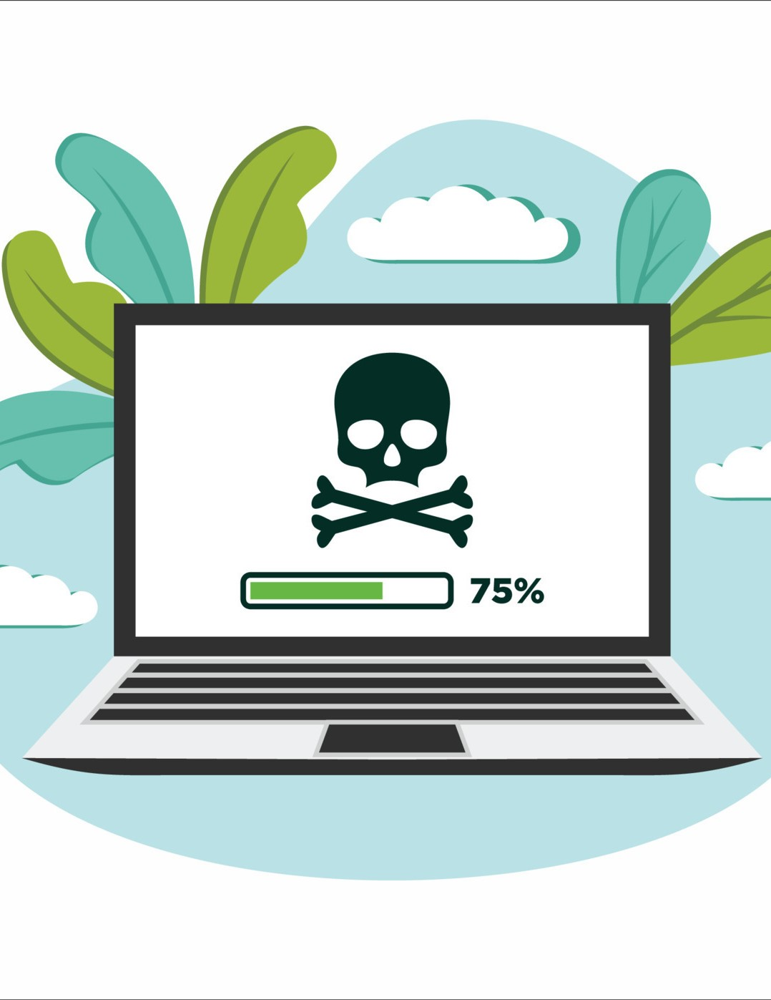

Aanvallers en verdedigers spelen een kat- en muisspel, verdedigers verzinnen betere verdediging en aanvallers bedenken betere aanvallen. Aanvallers noemen we snel hackers maar er zijn ook hackers met een goede bedoeling hiernaast leest u wat internetcriminaliteit precies is.

Wil jij misschien leren om te hacken en daarmee een ethische hacker te worden? Kijk dan zeker naar de onderstaande video!
Computercriminaliteit
De belangrijkste vormen van cybercrime zijn:
diefstal
fraude
afpersing
Hieronder leest u elk van deze kopjes uitgebreid
Diefstal
Diefstal kan op veel manieren gebruiken voorbeelden zijn:
een apparaat van u word gehacked
een dief heeft toegang tot een database met uw gegevens
Soms kunt u er niks van merken dat er diefstal is geweest.
Gestolen data wordt verkocht of onder die naam kunt de dief criminele activiteiten doen dat heet identiteitsfraude . Als de dief zegt dat u geld moet betalen of de gegevens worden verkocht heet dat afpersing
Fraude
Bij fraude wordt er bedrog gepleegd met het doel om mensen geld afhandig te maken. Een bekend voorbeeld is phishing.
Fraude komt ook voor via:
online shops
sociale media
online dating.
bij online shops kan het gebeuren dat u iets koopt en er al voor betaalt maar het product nooit ontvangt. Bij online dating doen ze iemand voor wie ze niet zijn, en als ze dan willen ontmoeten heeft de dief geen geld voor een vliegticket en vraagt geld aan het slachtoffer.
Afpersing
Bij afpersing is vooral ransomware bekend. Bij afpersing dreigen criminelen met gegevens of foto’s die ze verspreiden tenzij u meer stuurt of geld betaalt. Als het dreigen gebuirt met naaktfotos is het ook seksueel misbruik.
Vaak vertellen ze niet de waarheid maar dat kunt u niet weten. Mensen betalen vaak uit angsten.
Computervredebreuk
Computervredebreuk is een naam die de wet geeft aan hacken. Computervredebreuk is het ongeoorloofd binnenbringen in een computersysteem. Het is dus een inbraak.
Ethisch hacken
Hacken voor goede bedoelingen heet ethisch hacken. Ethische hackers gaan op zoek naar een lek in een website en geven dat dan vervolgens door aan de maker van de website zodat de lek kan worden gerepareert.
Vaak word een lek openbaar gemaakt, omdat sommige bedrijven er niets aan de lek doen of heel sloom de lek repareren.
Vaak geven hackers eerst de lek door aan het bedrijf en dan een bepaalde periode later maakt de hacker de lek openbaar dit heet responsive disclosure.
Etische hackers zijn officieel strafbaar maar worden niet vervolgt tenzij ze onnodige gegevens stelen of te veel computers hacken.
Spionage en oorlogsvoering
Zero day is een nog niet ondekte lek. zero day's zijn erg veel geld waard, omdat het belangrijke middelen zijn voor bij het hacken.
Zero day kunt u zien als wapens in een digitale oorlogsvoering en de handel ervan is een soort wapenhandel.
Bedrijven kopen ook soms zero days om ervoor te zorgen dat ze hun bedrijf kunnen repareren.
Ook de overheid koopt ze om te spioneren. Ze hacken dan de systemen van de vijand.
Lijkt het jou interessant om wat meer te leren over de grootste Cyber Espionage aanval in Amerika? Kijk dan de volgende video over de beroemde SolarWinds Hack